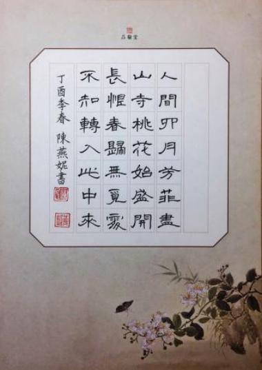
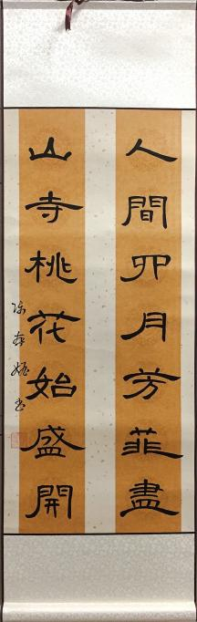

关于隶书的定义，近人吴伯陶先生一篇：《从出土秦简帛书看秦汉早期隶书》的文章中说道：“可以用这个字的本义来作解释。〈说文解字〉中解释‘隶’的意义是‘附着’，〈后汉书·冯异传〉则训为‘属’，这一意义到今天还在使用，现代汉语中就有‘隶属’一词。〈晋书·卫恒传〉、〈说文解字序〉及段注，也都认为隶书是‘佐助篆所不逮’的，所以隶书是小篆的一种辅助字体。”
秦始皇在“书同文”的过程中，命令李斯创立小篆后，又采纳了程邈整理的隶书。汉朝的许慎在《说文解字》记录了这段嬴政统一文字后，汉朝复兴和发掘传统文字的历史：“……秦烧经书，涤荡旧典，大发吏卒，兴役戍，官狱职务繁，初为隶书，以趣约易，而古文由此绝矣”。“而北京大学教授、书法大家李志敏认为秦始皇统一六国文字，对当时的社会进步有积极意义，但未必有利于书法艺术的发展。 孝宣皇帝时，召通《仓颉》读者，张敞从受之。凉州刺史杜业，沛人爰礼，讲学大夫秦近，亦能言之。孝平皇帝时，征礼等百余人，令说文字未央廷中，以礼为小学元士。黄门侍郎扬雄采以作《训纂篇》。凡《仓颉》以下十四篇，凡五千三百四十字，群书所载，略存之矣……郡国亦往往于山川得鼎彝，其铭即前代之古文，皆自相似。虽叵复见远流，其详可得略说也……盖文字者…前人所以垂后，后人所以识古。故曰：本立而道生。知天下之至赜而不可乱也”。但是也有人认为，作为官方文字的小篆书写速度较慢，而隶书化圆转为方折，提高了书写效率。例如郭沫若用「秦始皇改革文字的更大功绩，是在采用了隶书」来评价其重要性（《奴隶制时代·古代文字之辩证的发展》）。
隶书是汉字中常见的一种庄重的字体，书写效果略微宽扁，横画长而直画短，讲究“蚕头燕尾”、“一波三折”。它起源于秦朝，在东汉时期达到顶峰，书法界有“汉隶唐楷”之称。也有说法称隶书起源于战国时期。
隶书是相对于篆书而言的，隶书之名源于东汉。隶书的出现是中国文字的又一次大改革，使中国的书法艺术进入了一个新的境界，是汉字演变史上的一个转折点，奠定了楷书的基础。隶书结体扁平、工整、精巧。到东汉时，撇、捺、点等画美化为向上挑起，轻重顿挫富有变化，具有书法艺术美。风格也趋多样化，极具艺术欣赏的价值。
隶变在中国书法史上是一次重大的书法文化事件。发生隶变的内在动因是为了适应当时社会发展对文字应用的要求。“隶变主要表现在两个方面：一是字形结构的变化，既是对正体篆书字形结构的改造，这种改造的主要方向是简化；二是书写方式的变化，既是改变原有正体篆书的书写方式，这种改变的主要目的是简捷流便”。字形结构的简化和书写方式的简捷流便构成了隶变过程的核心内容。在这里，字形结构的简化和书写方式的简捷流便，不光为了书写速度的提高，同时因其蕴涵着内在的书写运动态势更加符合人的生理运动轨迹，才使隶书在秦汉之交随着政治的更替最终彻底代替篆书而获得普遍应用的。
就书法而言，隶变完成了以下篆隶转换： 1、摆脱篆书字型结构的凝固化束搏而走向隶书线条时空运动的抽象化表现； 2、线条由篆书委婉的弧笔变为险峻的直笔，曲折处由篆书的联绵圆转变为转折的方笔。隶变标志着汉字相形性的破坏和抽象符号的确立，使汉字由古文字体系向今文字体系转换；同时也标志着隶书的独立品格和美学特征的最终形成。
隶书的结构特点：
1、字形扁方左右分展隶字一反篆字纵向取势的常态，而改以横向（左右）取势，造成字形尚扁方，笔画收缩纵向笔势而强化横向分展。
2、起笔蚕头收笔燕尾这是隶书用笔上的典型特征，特别是隶字中的主笔横、捺画几乎都用此法。所谓“起笔蚕头”，即在起笔藏（逆）锋的用笔过程中，同时将起笔过程所形成的笔画外形写成一种近似蚕头的形状。“收笔燕尾”，即在收笔处按笔后向右上方斜向挑笔出锋。
3、化圆为方化弧为直这是隶书简化篆书的两条基本路子。不过如果不了解篆书的圆，就不易掌握好隶书的方。因为隶笔中的直画或方折，还无不包藏着篆字的弧势，所以隶笔的直往往有明显的波动性，富于生命力。实际上隶书的笔意，是建立在笔画运动方式基础上的。
4、变画为点变连为断我们知道篆字不用点，即使用点也只是一种浑圆点。而隶书中点已独立了出来，不再依附于画，而且点法也日益丰富，有平点、竖点、左右点、三连点（水旁）、四连点（火旁）等等。此外，隶书还将篆字中许多一笔盘旋连绵写成的笔画断开来写，大开了书写的方便之门，后来楷书更发挥了这种方式，更允许笔与笔间出现衔接痕迹，甚至笔断意连。
5、强化提按粗细变化写篆书时用笔的纵向提按要求不现痕迹，而隶书则有意强调提按动作，形成笔画轨迹显著的粗细、转承变化，起、行、收用笔的三过程都有了明确的体现。这与后来的楷书已很相近。